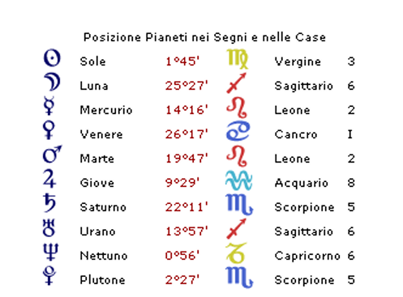
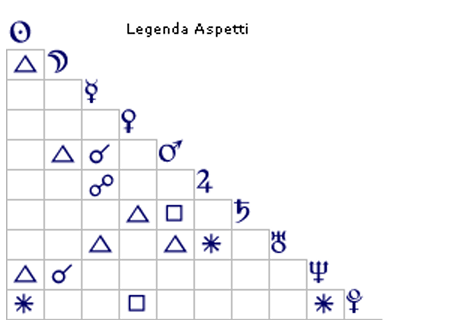

Biografie
Alessia Pifferi
Milano, 25 agosto 1985
Alessia Pifferi nata a Milano il 25/08/1985 alle ore 2:30
Vegine Ascendente Cancro


La seduzione come sopravvivenza — Ritratto astrologico di una psiche fragile
Il Sole in Vergine in Terza Casa descrive una psiche che non attinge l'autostima da una sorgente interiore stabile, ma la costruisce attraverso il riconoscimento esterno. In termini junghiani, il Sé non è ancora pienamente individuato: dipende dallo sguardo dell'altro per sentirsi sicuro. Questa carenza trova tuttavia un contrappeso nel sestile tra il Sole e Plutone in Quinta Casa in Scorpione: la consapevolezza, elaborata quasi inconsciamente, che il potere della seduzione rappresenta uno strumento efficace — forse l'unico percepito come tale — per orientare il proprio destino.
Centrale nell'intera struttura del tema è il trigono tra Venere in Prima Casa in Cancro e Saturno in Quinta Casa in Scorpione. Questa configurazione non parla di eros leggero né di piacere fine a sé stesso: parla di seduzione come contratto implicito, come linguaggio attraverso cui negoziare protezione e stabilità. La femminilità diventa un capitale da investire — con la precisione quasi contabile tipica della Vergine — in cambio di una struttura solida che metta al riparo da quella precarietà affettiva ed economica che ha segnato l'infanzia. Il partner non è cercato come compagno d'elezione, ma come pilastro portante di un'architettura di sopravvivenza psichica.
La casa settima in Capricorno/Acquario conferma e articola questa visione del legame di coppia lungo due direttrici distinte. Attraverso l'energia saturnina, ella cerca il partner-padre: autorevole, concreto, capace di gestire le responsabilità che lei percepisce come minacciose. Attraverso l'energia uraniana — espressa dal trigono tra Urano in Sesta Casa e la congiunzione Mercurio-Marte tra la Seconda e la Terza — cerca invece scorciatoie relazionali e opportunità da sfruttare con rapidità e intelligenza situazionale, con quella capacità adattiva di cogliere la congiuntura favorevole prima ancora che si manifesti pienamente.
La genesi di questo schema caratteriale affonda in un ambiente d'infanzia vissuto come impositivo e senza respiro. La congiunzione Mercurio-Marte in Sesta Casa, con Marte in trigono alla Luna, evoca la presenza di una figura materna pragmatica fino alla durezza, sbrigativa nei modi, forse aggressiva nella comunicazione: una madre che insegnava a sopravvivere, non a fiorire. In contrasto, la figura paterna appare affettivamente più morbida ma priva di concretezza direttiva, come suggerisce il trigono del Sole alla Luna-Nettuno in Sesta Casa: un padre dai contorni sfumati, presente nel calore ma assente nella guida.
A questo si sovrappone il peso della precarietà economica, magistralmente descritto dall'opposizione Mercurio-Marte a Giove in Acquario in Ottava Casa. Questa tensione planetaria sembra aver cristallizzato in lei una convinzione profonda: senza denaro non esiste né vera libertà (Acquario) né vera dignità (Leone). La scarsità materiale vissuta in famiglia non è stata soltanto un disagio concreto, ma un'esperienza che ha intaccato il senso di valore personale. In un nucleo familiare dove l'urgenza del quotidiano consumava ogni energia, non restava spazio per la tenerezza, per le cure silenziose, per quelle attenzioni di cui una Venere in Prima Casa in Cancro ha un bisogno viscerale per sentirsi degna d'amore. Il risultato è una fame affettiva che non si è mai del tutto placata, e che ha trovato nella seduzione la sua forma di espressione — e di rivendicazione.
La capacità di tradurre le intenzioni in azioni sostenute nel tempo è strutturalmente compromessa dal quadrato tra Marte e Saturno. Ogni slancio verso l'autonomia si scontra con un freno interno potente: il timore del fallimento, la censura anticipatoria, quella voce critica che la Vergine conosce bene e che, in questa configurazione, si fa particolarmente assordante. Non si tratta di pigrizia, ma di un blocco più profondo — una paralisi della volontà che si attiva ogni volta che l'obiettivo richiede perseveranza e rischio prolungato. È precisamente questa limitazione che rende la seduzione tanto preziosa come strategia: offre risultati rapidi senza esporre al pericolo di un impegno che potrebbe rivelare le proprie fragilità.
Sebbene il Sole in Vergine aspiri all'ordine e al metodo, la congiunzione Luna-Nettuno in Sesta Casa introduce una componente profondamente destabilizzante nella gestione del quotidiano. È come se, sotto la superficie organizzata, vivesse una corrente carsica di volatilità emotiva e fuga dalla realtà. Quando la pressione delle incombenze pratiche supera una soglia soggettiva di tolleranza, lei stacca: si ritira in una dimensione interiore o immaginaria, somatizza il disagio, e delega — quasi inconsapevolmente — il peso della gestione concreta al partner o alle figure di riferimento. In senso winnicottiano, è come se il falso Sé organizzato e competente cedesse improvvisamente il passo a un vero Sé ancora infantile e disorientato, incapace di reggere il contatto prolungato con la durezza del reale.
Un'altra risorsa che questa donna padroneggia con notevole abilità è il linguaggio. L'opposizione Mercurio-Marte a Giove in Ottava Casa rivela una comunicazione che non descrive la realtà, ma la plasma intenzionalmente: i meriti vengono amplificati, le lacune occultate, la narrazione di sé costruita con cura per preservare il sostegno economico e il prestigio sociale. Non si tratta di menzogna banale, ma di una forma sofisticata di gestione dell'immagine — una strategia narrativa che serve a tenere a distanza lo spettro dell'inadeguatezza.
Questa dinamica di sopravvivenza narcisistica si riflette anche nella relazione con i figli, descritta dalla Quinta Casa in Bilancia con Scorpione intercettato. Poiché Venere, governatrice della Quinta, si trova in Prima Casa, i figli tendono ad essere vissuti come estensioni del Sé piuttosto che come individui separati e autonomi: il legame è intenso, ma strutturalmente condizionato. Quando si presenta un'occasione di conquista amorosa che promette la tanto agognata sicurezza economica, lei entra in una sorta di trance progettuale — favorita dalla congiunzione Luna-Nettuno in trigono al Sole — nella quale tutto il resto, inclusi i bisogni primari dei figli, scivola in secondo piano. Non si tratta di indifferenza fredda e calcolata, ma di un assorbimento totale, quasi dissociativo, in cui la sopravvivenza psichica della madre oscura temporaneamente la percezione delle esigenze altrui.
Gli psichiatri che hanno esaminato la Pifferi hanno escluso disturbi del pensiero e alterazioni psicotiche, rilevando invece "un'immagine di sé non ben definita", una "profonda insicurezza legata ai compiti dell'età adulta", un vissuto di "deprivazione affettiva e socio-relazionale" e tratti disfunzionali che tuttavia non raggiungono la soglia clinica del disturbo di personalità. Questa descrizione si sovrappone con notevole precisione alla lettura del tema natale.
Persino la diagnosi scolastica di "disarmonia evolutiva" — che all'epoca motivò la proposta di un insegnante di sostegno — trova una spiegazione astrologica coerente. La congiunzione Luna-Nettuno in Sesta Casa, il settore delle abitudini e dell'applicazione quotidiana, può aver prodotto nella bambina quella che appariva come assenza cognitiva: non un deficit reale, ma una fuga psichica, un ritiro in un mondo interiore per sfuggire a un ambiente percepito come troppo aggressivo (Mercurio congiunto a Marte, Marte in trigono alla Luna). A questo si aggiungeva il congelamento indotto dal quadrato Marte-Saturno: davanti all'autorità dell'insegnante e alla rigidità delle regole, la sua capacità di azione si paralizzava.
Paradossalmente, quella diagnosi precoce può aver alimentato il suo narcisismo difensivo: essere etichettata come "bisognosa di sostegno" deve aver ferito profondamente l'orgoglio di una Venere in Prima Casa in Cancro, seminando il desiderio — diventato imperativo nel tempo — di affrancarsi da quell'immagine di inadeguatezza attraverso qualsiasi mezzo disponibile.
Il ritratto che emerge non è quello di una personalità malevola per elezione, ma di una psiche strutturata intorno a una ferita originaria — la mancanza di cura, di protezione, di riconoscimento — che ha sviluppato, in risposta, un sistema adattivo complesso e coerente nella sua logica interna. La seduzione, l'astuzia verbale, la ricerca del partner-pilastro: tutto risponde a un'unica grammatica, quella della sopravvivenza emotiva.
La sua realizzazione non risiede nell'autonomia — che teme, perché ogni fallimento autonomo sarebbe l'ennesima conferma dell'inadeguatezza originaria — ma nella capacità di rendersi indispensabile all'interno di una struttura relazionale che le garantisca protezione. Delega la fatica del vivere a chi le sta accanto, e in questo trova il solo equilibrio che conosce: precario, dipendente, ma per lei necessario come l'aria.